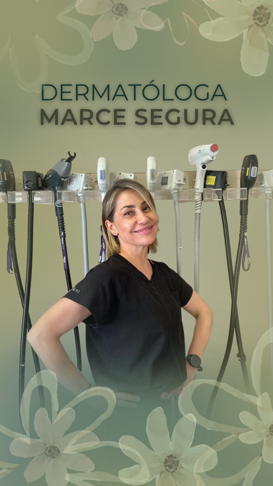

Marca personal · Salud
Dra. Marce Segura
Una versión digital tan auténtica como la real: una marca personal capaz de sostenerse sola.

El desafío
Una identidad real, llevada a lo digital.
Marce ya tenía una identidad muy definida en la vida real: dermatóloga, corredora y profesional con una mirada cercana sobre la salud de la piel. El desafío era construir una versión digital que se sintiera igual de auténtica, pero que además pudiera funcionar como marca profesional.
La idea
No un personaje: un alter ego digital.
No crear un personaje artificial, sino encontrar un alter ego digital capaz de unir sus distintas facetas: medicina, educación, tratamientos, tecnología y running.
La ejecución
Identidad, tono y contenidos que se sostienen entre sí.
Construimos identidad, tono y estrategia de contenidos para transformar conocimiento médico en información clara y cercana, comunicar tratamientos y mostrar también a la persona detrás de la profesional. Así se ve cada una de esas capas.
Primero, la identidad: nacida de Catamarca y la naturaleza, del árbol al cactus.
Identidad y territorio
Después, el conocimiento médico convertido en información clara, cercana y reconocible.
Educación y tratamientos
Y la persona detrás de la profesional, con una estructura flexible, adaptada a su tiempo y a su vida real.
Running y vida cotidiana
El resultado
Una identidad natural capaz de sostenerse sola.
Una marca personal con una narrativa propia, capaz de crecer sin depender de una única temática. La estrategia acompañó el crecimiento orgánico de la comunidad y la interacción, fortaleció el reconocimiento profesional y generó más consultas vinculadas con tecnología láser.
Marce ganó seguridad frente a cámara y criterio propio para gestionar la cuenta: hoy integra dermatología y running en una presencia clara, activa y coherente, sin depender de Vicky detrás de cada publicación.
Algunos contenidos sobre productos también recibieron respuestas de marcas dermatológicas y farmacéuticas. Esas interacciones fueron señales de visibilidad, no colaboraciones oficiales ni acuerdos comerciales.
¿Tu conocimiento todavía no se percibe con claridad?